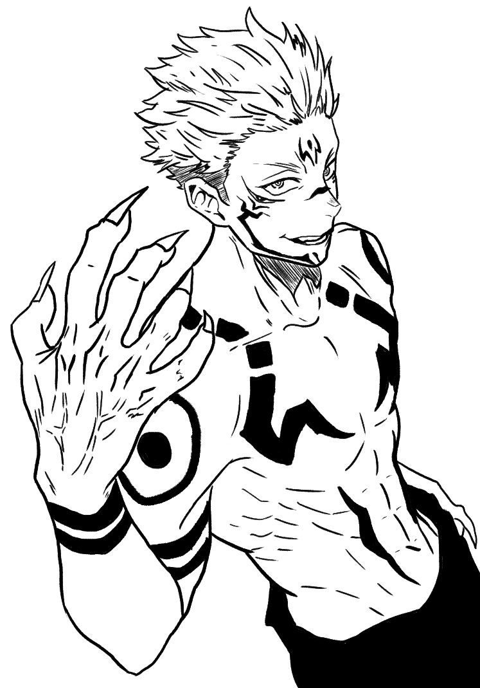
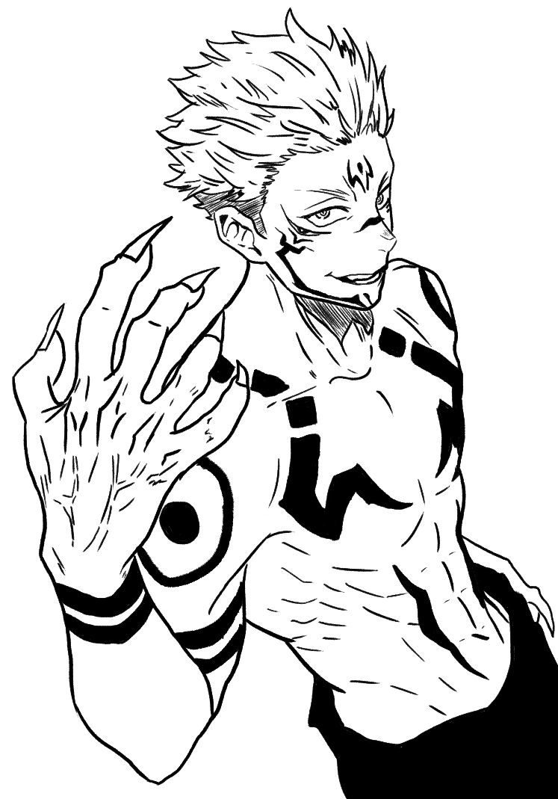

This piece was for my third project in Character Design with Steve Bryant. I drew Husk from Hazbin hotel in a nior/speakeasy type bar, all while adding the four card symbols.
This piece was for my second project in Character Design with Steve Bryant. I drew Alastor from Hazbin hotel, Markiplier, and Sebastion from Black Butler all in my style.


This piece was for my first project in Character Design with Steve Bryant. I drew Gojo from Jujutsu Kaisen. This first project was a turnaround to work on propotions and same posing.
All of the following works are what I created for the 2024 Fall Game Jam with ISU. The title of the game is Wish Upon A Star. My group and I created a dating sim style video game featuring four different characters all from different universes. I created a good amount of the backgrounds as well as one of our four characters.


All of the following works are what I created for the 2024 Spring Game Jam with ISU. The game title is Underneath Their Covers. My group and I created a dating sim style video game featuring different characters that are representations of different book genres. I created all of the art for the game.


All of these works are from my first semester at Illinois State University! These are all from my Comics class taught by Steve Bryant in the fall of 2023.
This is a two page comic from the start of the semester. I was just beginning my digital art journey, I was using Photoshop for all of these Comic projects, instead of my present day application of choice, Clip Studio Paint.


This is the Final for my Comics class. Before this class I worked traditionally in black and white. With this final I wanted to push myself and do a full color page and I loved how it turned out.


Here are the works I did during the summer of 2024 for my Digital Painting class with Steve Bryant.


Here are just some miscellaneous works I have done.
 
